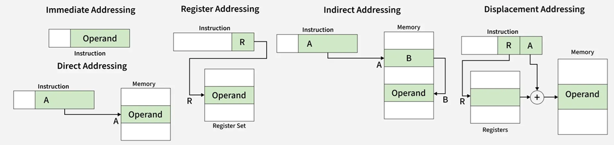

Los modos de direccionamiento determinan cómo el CPU localiza los datos que necesita para ejecutar una instrucción. Cada modo ofrece una manera diferente de acceder a valores almacenados en registros, memoria o dentro de la propia instrucción. Elegir un modo adecuado mejora la eficiencia y flexibilidad del programa.
En este modo, el valor se encuentra directamente dentro de la instrucción. Es rápido y sencillo, ya que no
requiere accesos adicionales a memoria. Sin embargo, está limitado a valores pequeños que puedan codificarse
directamente en la instrucción, por lo cual no se puede cargar un registro de segmento de manera inmediata.
Se utiliza principalmente para inicializar registros o localidades de memoria y para operar sobre
ellos con valores constantes de datos.
Cuando se usta este direccionamiento se obtiene el dato como
parte de la instrucción. Ej.
MOV AX,0ABCDH
La instrucción contiene la dirección exacta donde se encuentra el dato. Este modo facilita el acceso a valores
específicos en memoria, aunque requiere más tiempo debido a la consulta directa al sistema de almacenamiento.
Transfiere un byte o palabra, contenido en una localidad de memoria, a un registro de 8 o 16 bits. La
localidad de memoria puede ser el operando fuente o destino. Ej.
MOV AL,[1234H]
En este caso, la instrucción señala un registro o dirección que contiene a su vez la ubicación real del dato.
Este método permite mayor flexibilidad, especialmente cuando se trabajan estructuras dinámicas como arreglos
o tablas.
Soluciona el problema de eficiencia que se encuentra al usar el modo directo cuando una
localidad de memoria se lee o escribe multiples veces Ej.
MOV [DI],BH
MOV [BP],DL
El dato se encuentra almacenado en uno de los registros internos del CPU. Este modo es muy veloz porque evita
accesos a memoria externa y aprovecha la rapidez de los registros.
Dentro de este ,pdp el operando no
requiere ninguna referencia de memoria al ser registrso, pero losdos operadoes no pueden se registros de
segmento Ej.
MOV AX,CX
INC BX
Utiliza un registro base sumado a un desplazamiento para calcular la ubicación del dato. Es ideal para recorrer
estructuras ordenadas como matrices o buffers, proporcionando un mecanismo eficiente para modificar posiciones
dentro de un bloque de datos.
En las maquinas con organización de registrso generales, el registro base
puede ser cualquiera de los registros del CPU,Ej. donde 1324h es dirección base y 12 el registro base.
MOV AX, [1324H+12]